The goal of this analysis is to explore how structural factors—specifically income inequality, poverty, and racial composition—shaped COVID-19 outcomes in U.S. counties from 2020 to 2023. These factors are well-established social determinants of health and are known to influence exposure risk, access to care, and vulnerability to severe illness. To study these relationships, I created a series of visualizations and regression models that help illustrate how COVID-19 cases and deaths varied across places with different socioeconomic and demographic profiles.
First, to examine the relationship between poverty and COVID-19 outcomes, we used two measures of socioeconomic disadvantage: an inequality index, calculated as the ratio of 80th percentile income to 20th percentile income (P80/P20), and the poverty rate.
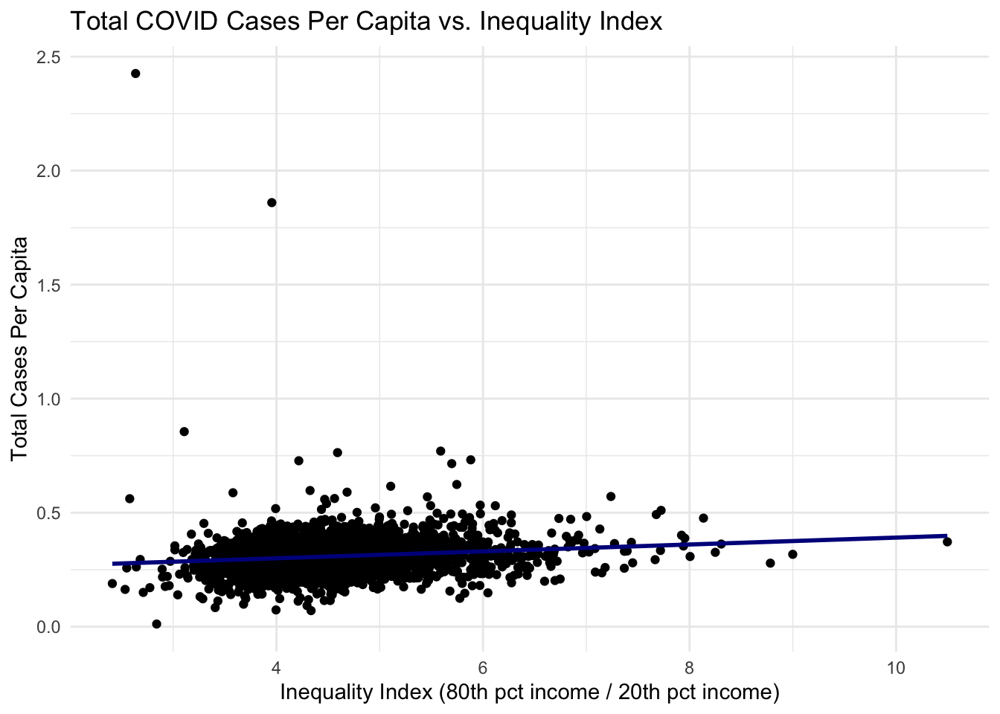
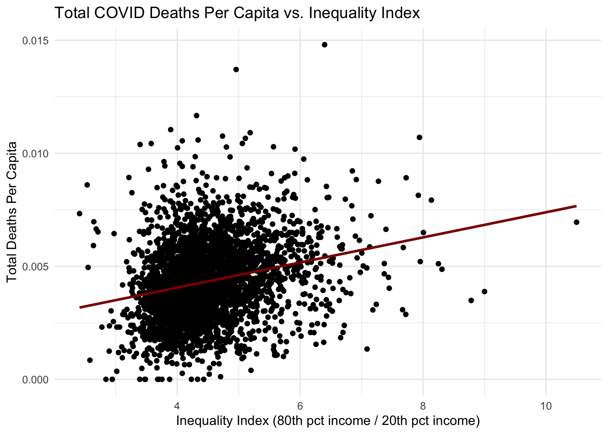
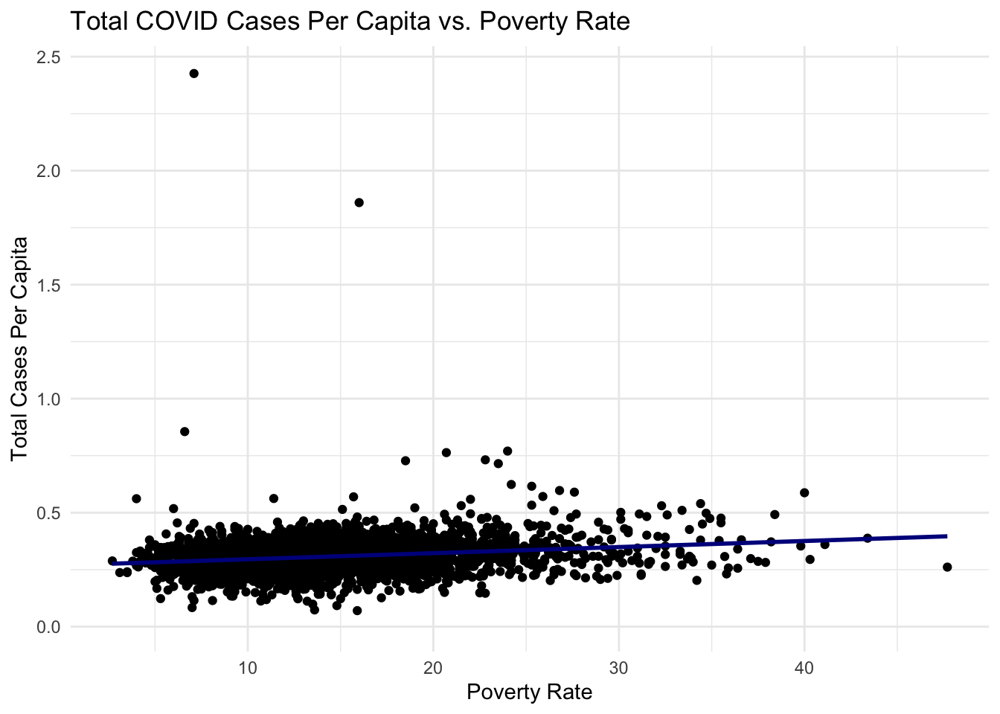
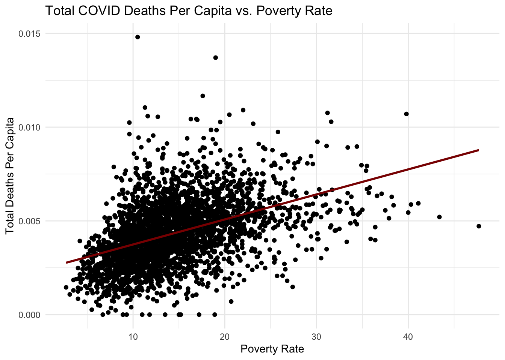
Across both outcomes, the plots show a positive correlation, indicating that regions with higher income inequality and poverty rate tend to experience more COVID cases and deaths per capita. To explore this relationship, we analyzed each year separately to assess how the strength of the association changed over time.
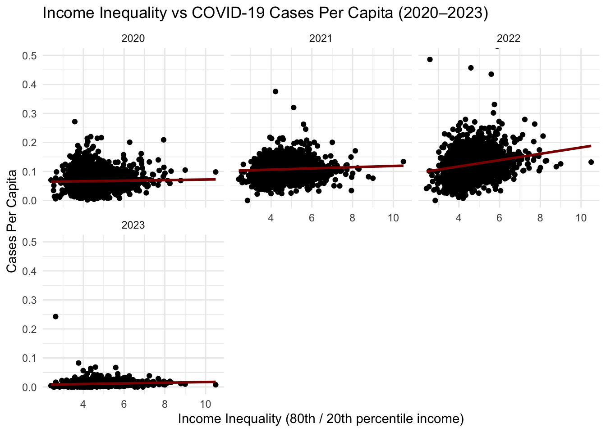
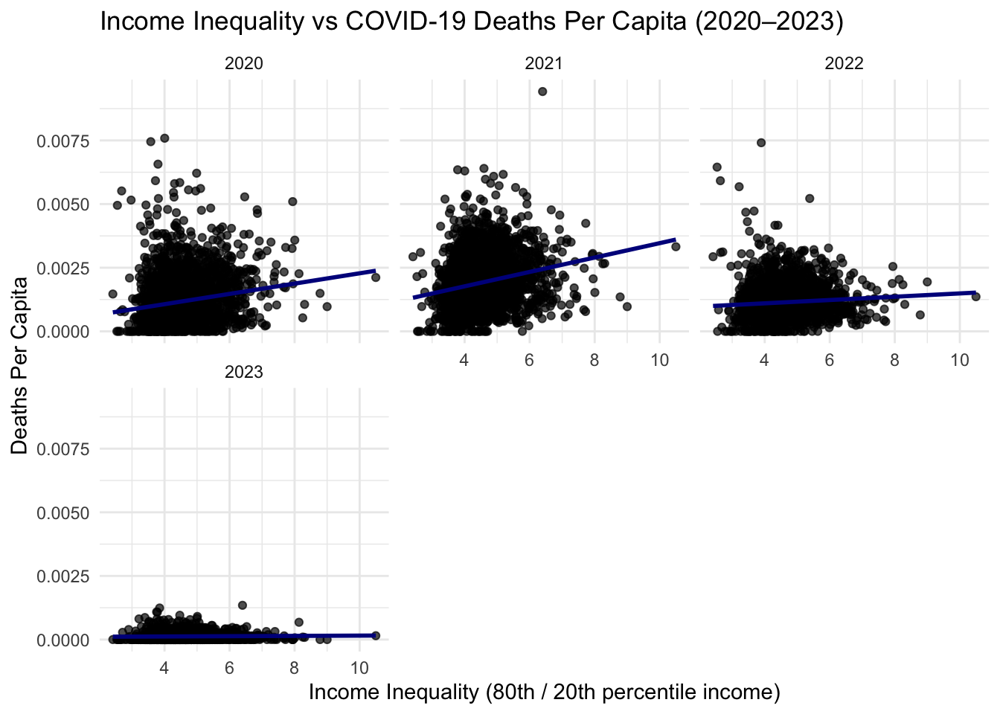
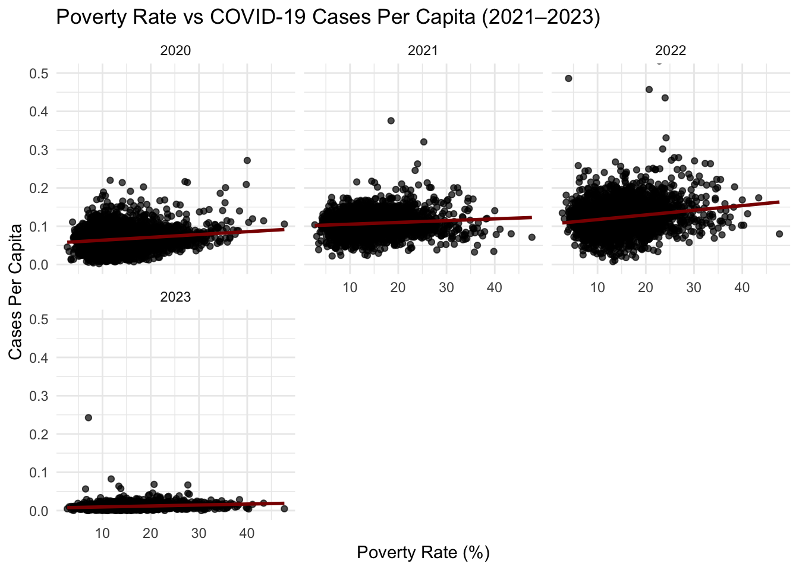
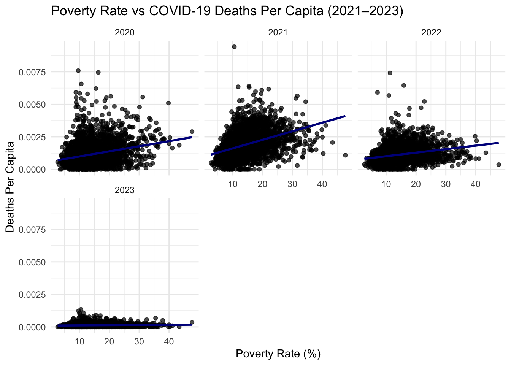
These show a consistent positive association between both income inequality and poverty with COVID-19 cases and deaths per capita. Counties with higher inequality or greater poverty generally experienced worse COVID outcomes, showing the pattern we observed in the earlier graphs.
In 2020 and 2021, the relationship between COVID cases and socioeconomic disadvantage is present but relatively modest. By 2022, the association between socioeconomic disadvantage and COVID cases becomes significantly more apparent. By 2023, case and death rates had fallen drastically.
For COVID deaths, we see drastically more deaths in 2020 and 2021. The deaths flatten out in 2022 and 2023.
Given these clear year-to-year differences in the visual patterns, the next step was to fit an interaction model between inequality and year (inequality × year). This would allow for testing whether the effect of inequality on COVID outcomes changed over time and quantifies how the strength of this association strengthened or weakened across pandemic phases. We focused on inequality rather than including poverty rate as well, since both measures have shown nearly identical trends across all years and adding both would introduce redundancy.
| term | estimate | std.error | statistic | p.value |
|---|---|---|---|---|
| (Intercept) | 0.0625389 | 0.0037943 | 16.4821562 | 0.0000000 |
| inequality | 0.0009550 | 0.0008311 | 1.1490442 | 0.2505597 |
| year2021 | 0.0353327 | 0.0053660 | 6.5845301 | 0.0000000 |
| year2022 | 0.0111688 | 0.0053660 | 2.0813895 | 0.0374185 |
| year2023 | -0.0571652 | 0.0053660 | -10.6531985 | 0.0000000 |
| inequality:year2021 | 0.0011463 | 0.0011754 | 0.9753205 | 0.3294202 |
| inequality:year2022 | 0.0099409 | 0.0011754 | 8.4578454 | 0.0000000 |
| inequality:year2023 | 0.0002064 | 0.0011754 | 0.1756359 | 0.8605828 |
| term | estimate | std.error | statistic | p.value |
|---|---|---|---|---|
| (Intercept) | 0.0002577 | 0.0000766 | 3.363861 | 0.0007709 |
| inequality | 0.0002023 | 0.0000168 | 12.053034 | 0.0000000 |
| year2021 | 0.0003796 | 0.0001083 | 3.503945 | 0.0004600 |
| year2022 | 0.0005836 | 0.0001083 | 5.386376 | 0.0000001 |
| year2023 | -0.0001586 | 0.0001083 | -1.463385 | 0.1433872 |
| inequality:year2021 | 0.0000805 | 0.0000237 | 3.392399 | 0.0006950 |
| inequality:year2022 | -0.0001374 | 0.0000237 | -5.790819 | 0.0000000 |
| inequality:year2023 | -0.0001967 | 0.0000237 | -8.289331 | 0.0000000 |
The interaction models quantitatively confirm that the relationship between inequality and COVID outcomes changed substantially over the course of the pandemic, in ways that match the visual patterns in the earlier plots.
We also aimed to analyze the impact of different racial groups on COVID-19 cases and deaths. The following sections outline this analysis.
We see that counties with a higher proportion of Black residents show a strong positive correlation with total COVID deaths per capita. In contrast, counties with larger Asian populations show a strong negative correlation with deaths.
The next step is to study whether these race–COVID death associations strengthened, weakened, or shifted across years. We will just focus on deaths as these show preliminary promising results.
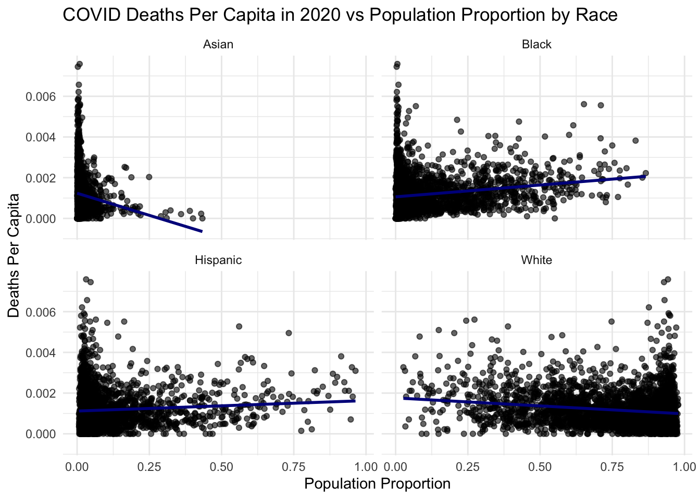
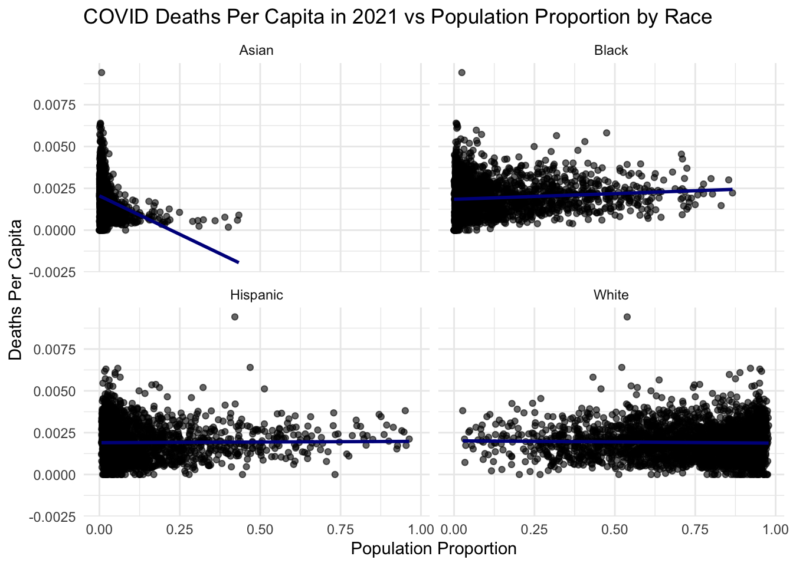
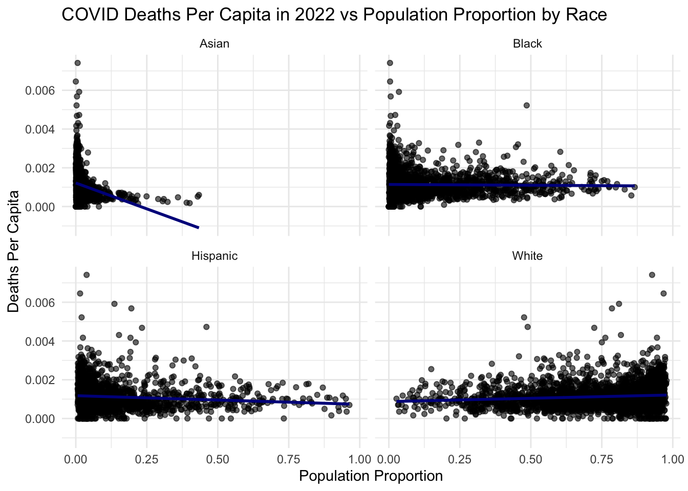
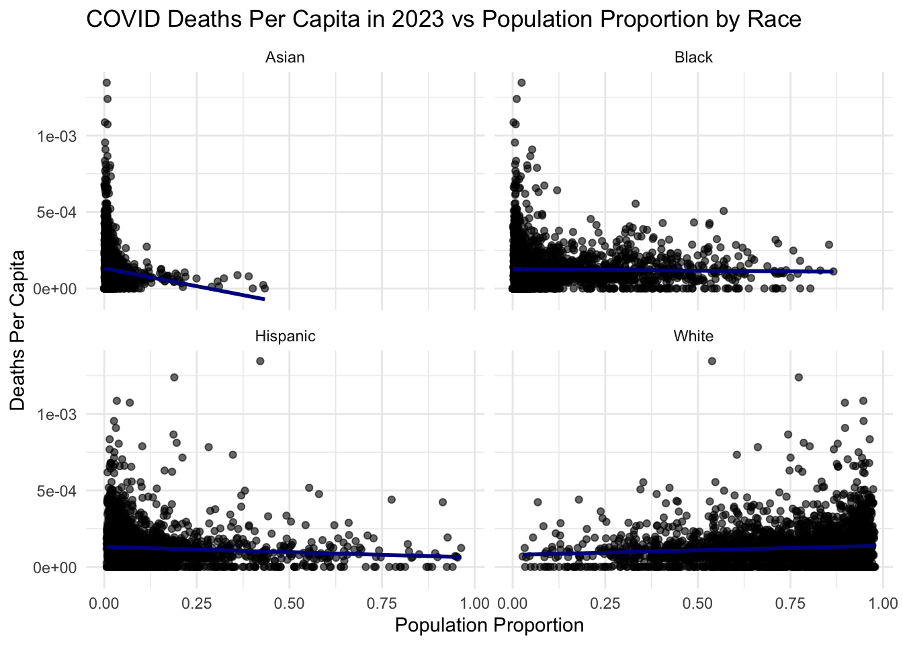
| race | year | p.value |
|---|---|---|
| Asian | 2020 | 0.00e+00 |
| Asian | 2021 | 0.00e+00 |
| Asian | 2022 | 0.00e+00 |
| Asian | 2023 | 0.00e+00 |
| Black | 2020 | 0.00e+00 |
| Black | 2021 | 0.00e+00 |
| Hispanic | 2020 | 5.80e-06 |
| Hispanic | 2022 | 0.00e+00 |
| Hispanic | 2023 | 1.21e-05 |
| White | 2020 | 0.00e+00 |
| White | 2022 | 0.00e+00 |
| White | 2023 | 0.00e+00 |
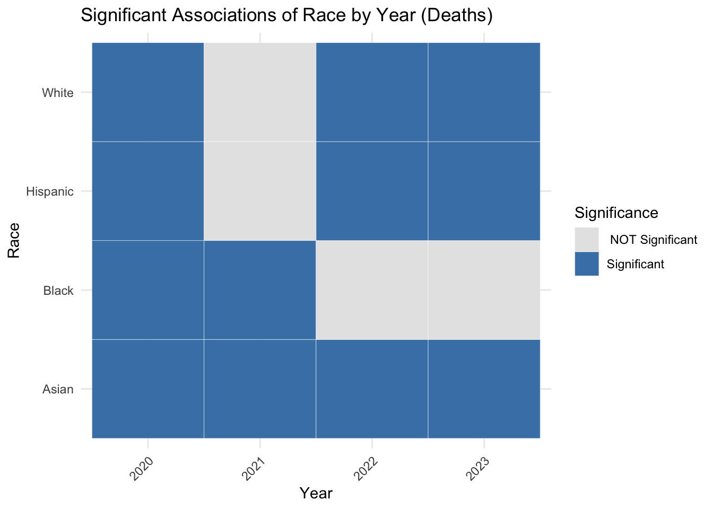
The proportion of the Asian population in counties was consistently and strongly associated with decreased COVID-19 death rates across all years from 2020 to 2023.
In contrast, the Black population showed a significant association with COVID-19 mortality primarily during the early years of 2020 and 2021, with this relationship diminishing in the subsequent years.
The Hispanic and White populations showed significant associations with COVID-19 death rates in 2020, 2022, and 2023, but not in 2021. In the scatterplot, we visually see a positive correlation in Hispanic populations and negative correlation in the White population in early years. More analysis on this in analysis section.